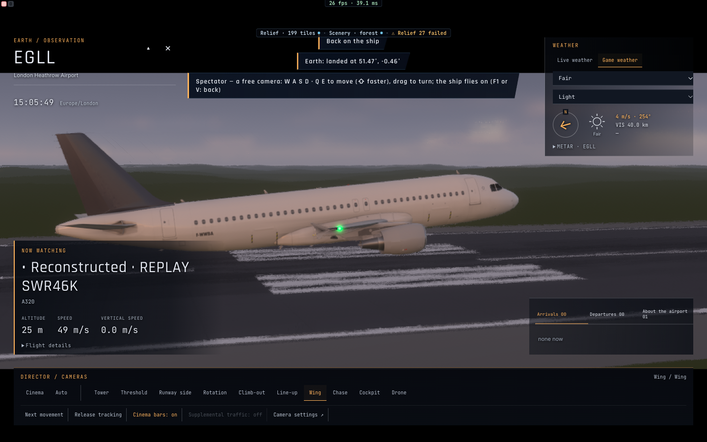
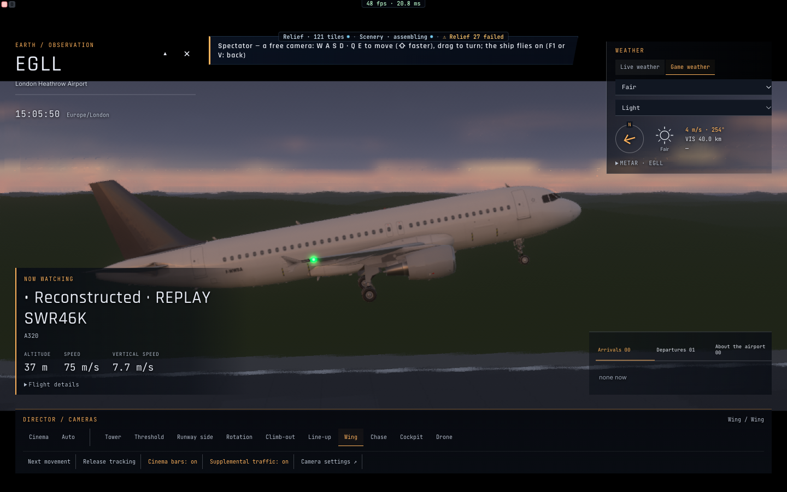

Vérifications finales : 34 tests ciblés / 1 428 assertions ; 2 e2e / 63 assertions ; TypeScript et Biome passent. Zéro erreur GPU dans le replay. Cadence soutenue et coûts par passe non mesurés.


Les positions des relevés sont observées ; l’instant de rotation entre deux relevés reste estimé. Les longs trous de couverture et les pushbacks sans cap du nez ne sont pas résolus par ce lot.
Unitaires : un premier témoin de courbure avait un seuil arbitraire trop élevé ; la vérification finale compare le taux de virage à la dérivée indépendante du cap de la vitesse. E2E : premier essai 0/2 (cible de repli DOM instable et appel de test à une méthode follow inexistante), corrigés par l’en-tête stable et l’action UI existante ; autre essai 1/2 (test attendant à tort un signe + dans le format de vitesse verticale), corrigé par la lecture numérique. Dernier passage : 2/2, 63 assertions. L’inspection des captures a révélé et corrigé la projection de vitesse verticale sur l’axe incliné de l’avion.